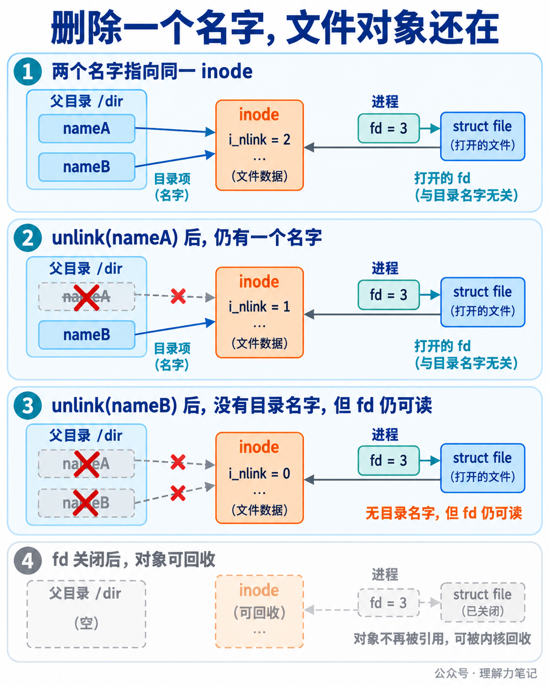

硬链接与 inode：多个文件名为什么指向同一个文件？
目录里有两个名字，不代表磁盘上有两份文件。link("original.txt", "second-name.txt") 可以为同一个文件增加第二个名字，两个路径用 stat 查询时会得到相同的 st_dev 和 st_ino。
结论： 硬链接增加的是同一文件的目录项，两个名字共享一个 inode 和文件数据，inode 的链接计数加一。unlink 只移除一个名字并减少链接计数；只要还有其他硬链接，或进程仍持有打开 fd，文件对象就不会因为这个名字消失而立即不可访问。硬链接通常要求源和目标位于同一文件系统，不能把普通文件内容跨文件系统复制成硬链接。
这篇文章怎么读？
第一章先用程序看到两个名字、一个 inode 和删除后的结果；第二章解释目录项、inode、链接计数与 fd 的关系；第三章讲接口限制、错误处理和竞态边界。
| 你是谁 |
看哪一章 |
会得到什么 |
| 搜索者 / 被推荐者 |
第一章 · 先解决问题 |
能运行的 link、stat、unlink 实验 |
| 学习者 |
第二章 · 机制解释 |
名字、inode、数据和 fd 的对象关系 |
| 编程者 |
第三章 · 工程使用 |
文件系统限制、错误码与接口选择 |
| 求职者 |
第四章 · 面试提炼 |
硬链接和符号链接的关键区别 |
第一章 · 先解决问题：相同 st_dev 和 st_ino 说明两个名字指向同一 inode
创建硬链接，再分别查询两个路径
下面的程序在临时目录里创建普通文件，写入一段内容，再调用 link 创建第二个名字。创建后立即查询两个路径；随后删除原来的名字，再从第二个名字查询并读取内容。
#define _DARWIN_C_SOURCE
#define _POSIX_C_SOURCE 200809L
#include <errno.h>
#include <fcntl.h>
#include <inttypes.h>
#include <stdio.h>
#include <stdlib.h>
#include <string.h>
#include <sys/stat.h>
#include <unistd.h>
static int write_all(int fd, const char *data, size_t length)
{
size_t written = 0U;
while (written < length) {
ssize_t n = write(fd, data + written, length - written);
if (n < 0) {
if (errno == EINTR)
continue;
return -1;
}
if (n == 0) {
errno = EIO;
return -1;
}
written += (size_t)n;
}
return 0;
}
static int print_stat(const char *label, const char *path)
{
struct stat st;
if (stat(path, &st) == -1)
return -1;
if (printf("%s: dev=%ju ino=%ju nlink=%ju size=%ju\n",
label, (uintmax_t)st.st_dev, (uintmax_t)st.st_ino,
(uintmax_t)st.st_nlink, (uintmax_t)st.st_size) < 0) {
errno = EIO;
return -1;
}
return 0;
}
static int read_and_print(const char *path)
{
int fd = open(path, O_RDONLY);
if (fd == -1)
return -1;
char buffer[64];
int status = -1;
for (;;) {
ssize_t n = read(fd, buffer, sizeof buffer);
if (n < 0) {
if (errno == EINTR)
continue;
goto done;
}
if (n == 0) {
status = 0;
break;
}
if (fwrite(buffer, 1, (size_t)n, stdout) != (size_t)n) {
errno = EIO;
goto done;
}
}
done:
{
int saved_errno = errno;
if (close(fd) == -1) {
status = -1;
saved_errno = errno;
}
if (status == -1)
errno = saved_errno;
}
return status;
}
int main(void)
{
char directory[] = "hardlink-demo-XXXXXX";
if (mkdtemp(directory) == NULL) {
perror("mkdtemp");
return EXIT_FAILURE;
}
char original[64];
char second[64];
int n1 = snprintf(original, sizeof original, "%s/original.txt", directory);
int n2 = snprintf(second, sizeof second, "%s/second-name.txt", directory);
if (n1 < 0 || n2 < 0 || (size_t)n1 >= sizeof original ||
(size_t)n2 >= sizeof second) {
fprintf(stderr, "path construction failed\n");
rmdir(directory);
return EXIT_FAILURE;
}
int status = EXIT_FAILURE;
int fd = open(original, O_WRONLY | O_CREAT | O_EXCL, 0644);
if (fd == -1) {
perror("open");
goto cleanup_directory;
}
const char content[] = "same inode, two names\n";
if (write_all(fd, content, sizeof content - 1U) == -1) {
perror("write");
close(fd);
goto cleanup_original;
}
if (close(fd) == -1) {
perror("close");
goto cleanup_original;
}
if (link(original, second) == -1) {
perror("link");
goto cleanup_original;
}
if (print_stat("original", original) == -1 ||
print_stat("second", second) == -1) {
perror("stat");
goto cleanup_second;
}
if (unlink(original) == -1) {
perror("unlink");
goto cleanup_second;
}
if (printf("after unlink original: ") < 0 ||
print_stat("second", second) == -1) {
perror("output/stat");
goto cleanup_second;
}
if (printf("content: ") < 0 || read_and_print(second) == -1 ||
fflush(stdout) == EOF) {
perror("read/output");
goto cleanup_second;
}
status = EXIT_SUCCESS;
cleanup_second:
if (unlink(second) == -1 && errno != ENOENT) {
perror("cleanup second");
status = EXIT_FAILURE;
}
cleanup_original:
if (unlink(original) == -1 && errno != ENOENT) {
perror("cleanup original");
status = EXIT_FAILURE;
}
cleanup_directory:
if (rmdir(directory) == -1) {
perror("rmdir");
status = EXIT_FAILURE;
}
return status;
}
代码用 st_dev 和 st_ino 一起打印对象身份。单独看 inode 编号不够，因为不同文件系统可能重复使用相同编号。所有打开、写入、关闭、链接、查询、读取和清理操作都检查了返回值；读取遇到 EINTR 会重试。
编译与运行
本次在 macOS 14.8.0、Darwin 23.6.0 x86_64 上用 Apple clang 16.0.0 编译：
cc -std=c17 -Wall -Wextra -Wpedantic -Wconversion -Wshadow -O0 -g hardlink_demo.c -o hardlink_demo
./hardlink_demo
实际输出如下，inode 数字和设备号会随系统变化：
original: dev=16777222 ino=66399630 nlink=2 size=22
second: dev=16777222 ino=66399630 nlink=2 size=22
after unlink original: second: dev=16777222 ino=66399630 nlink=1 size=22
content: same inode, two names
两个名字的 dev、ino 相同，创建硬链接后 nlink=2；删除 original.txt 后，second-name.txt 仍然指向同一 inode，链接计数变为 1，内容没有变化。
两个容易误判的失败分支
再看两个受控失败：目标名字已经存在，以及源对象是目录。保存为 link_errors.c：
#define _DARWIN_C_SOURCE
#define _POSIX_C_SOURCE 200809L
#include <errno.h>
#include <stdio.h>
#include <stdlib.h>
#include <string.h>
#include <sys/stat.h>
#include <fcntl.h>
#include <unistd.h>
static int show_failure(const char *label, int rc, int expected_errno)
{
if (rc == 0) {
fprintf(stderr, "%s unexpectedly succeeded\n", label);
return -1;
}
if (errno != expected_errno) {
fprintf(stderr, "%s: expected %s, got %s\n", label,
strerror(expected_errno), strerror(errno));
return -1;
}
printf("%s: %s\n", label, strerror(errno));
return 0;
}
int main(void)
{
char directory[] = "hardlink-errors-XXXXXX";
if (mkdtemp(directory) == NULL) {
perror("mkdtemp");
return EXIT_FAILURE;
}
char source[64];
char target[64];
char dir[64];
int a = snprintf(source, sizeof source, "%s/source", directory);
int b = snprintf(target, sizeof target, "%s/target", directory);
int c = snprintf(dir, sizeof dir, "%s/subdir", directory);
if (a < 0 || b < 0 || c < 0 || (size_t)a >= sizeof source ||
(size_t)b >= sizeof target || (size_t)c >= sizeof dir) {
fprintf(stderr, "path construction failed\n");
return EXIT_FAILURE;
}
int fd = open(source, O_WRONLY | O_CREAT | O_EXCL, 0600);
if (fd == -1) { perror("open"); return EXIT_FAILURE; }
if (close(fd) == -1) { perror("close"); return EXIT_FAILURE; }
if (mkdir(dir, 0700) == -1) { perror("mkdir"); return EXIT_FAILURE; }
int status = EXIT_FAILURE;
if (show_failure("existing destination", link(source, source), EEXIST) == -1)
goto cleanup;
if (show_failure("directory source", link(dir, target), EPERM) == -1)
goto cleanup;
status = EXIT_SUCCESS;
cleanup:
if (unlink(source) == -1) perror("cleanup source");
if (unlink(target) == -1 && errno != ENOENT) perror("cleanup target");
if (rmdir(dir) == -1) perror("cleanup directory");
if (rmdir(directory) == -1) perror("cleanup root");
return status;
}
cc -std=c17 -Wall -Wextra -Wpedantic -Wconversion -Wshadow -O0 -g link_errors.c -o link_errors
./link_errors
本机输出为：
existing destination: File exists
directory source: Operation not permitted
link 不会覆盖已有目录项，目标已存在时返回 EEXIST。普通进程创建目录硬链接通常被禁止，本机返回 EPERM；具体错误码还受系统和权限影响。跨文件系统的典型错误是 EXDEV，本次没有伪造跨挂载点实验。
第二章 · 从操作系统视角理解：目录项是名字，inode 才是文件对象
两个名字不是两份数据
目录可以理解为从名字到文件对象的映射。original.txt 和 second-name.txt 是父目录中的两个目录项，它们都指向同一个 inode。inode 保存文件类型、权限、大小、时间和链接计数等元数据，再指向文件数据块。
stat 返回的 st_dev 标识文件系统，st_ino 标识该文件系统内的 inode。两个字段组合起来，才是这次实验用来判断“同一对象”的依据。文件内容不属于目录项；目录项只保存名字和指向关系。
硬链接没有保存“原路径字符串”。创建第二个名字后，删除 original.txt 不会让 second-name.txt 变成一条指向原路径的链接，它仍然直接指向同一个 inode。这也是硬链接和符号链接的根本区别之一。
链接计数和打开引用是两条关系
st_nlink 统计当前有多少个硬链接目录项指向 inode。创建第二个名字后从 1 变成 2，删除一个名字后降回 1。它不统计进程打开了多少次，也不等于 inode 的全部引用数量。
进程调用 open 后，fd 是进程描述符表里的索引，槽位指向打开文件对象；打开文件对象再关联 inode。unlink 修改父目录和 inode 链接计数，不会遍历所有进程，把它们的 fd 一起关闭。

当最后一个硬链接名字被删除时，如果还有 fd 或内存映射，POSIX 要求文件内容的移除延后到这些引用消失。没有名字时，普通路径无法再次找到它，但持有 fd 的进程仍可读写，具体权限取决于打开方式。fd 关闭后，若没有其他引用，文件系统才可以回收对象和数据空间；“可回收”不等于应用能立刻观察到物理磁盘字节被擦除。
Linux 内核路径和文件系统操作
Linux 6.6 的系统调用入口把 link 和 unlink 路径交给 VFS 做路径解析与权限检查，具体文件系统再修改目录项、链接计数和 inode 状态。硬链接创建会要求目标目录项不存在，检查源对象类型和文件系统限制后，把新名字接到已有 inode。
应用层看到的是 link 成功返回 0，失败返回 -1 并设置 errno。内核源码里的负错误值，例如 -EEXIST、-EPERM 和 -EXDEV，经过系统调用边界后才映射成这个 C 接口约定。应用不应该把系统调用返回值直接当成 errno 数值。
文件系统负责具体的目录格式和持久化细节。ext4 的目录操作会更新目录项，并在 inode 上增加或减少链接计数；这属于 Linux 6.6/ext4 实现，不是 POSIX 对所有文件系统内部布局的保证。
第三章 · 工程上怎么使用：硬链接是同一对象的第二个名字
什么时候适合硬链接
硬链接适合需要两个等价入口、又希望数据只存一份的场景，比如同一文件在同一文件系统内拥有两个稳定名字。修改任意一个名字打开的对象，另一名字看到的也是同一份数据；它不是快照，也不会在写入时自动复制一份。
如果业务要求“删掉原文件后备份仍然完整”，硬链接可以让备份名字继续存在；但之后通过任一名字写入，两个名字看到的内容都会改变。需要独立副本时应复制内容，不能把硬链接当作备份快照。
接口限制和错误处理
| 情况 |
典型结果 |
工程判断 |
| 目标名字已经存在 |
EEXIST |
不覆盖，先明确是否允许替换流程 |
| 源和目标不在同一文件系统 |
EXDEV |
改为复制，或把目标放到同一文件系统 |
| 源对象是目录 |
通常 EPERM |
不依赖特权例外，普通程序拒绝目录硬链接 |
| 目标路径父目录无写权限 |
EACCES 或 EPERM |
检查父目录权限、sticky bit 和安全策略 |
| 路径不存在或前缀不是目录 |
ENOENT 或 ENOTDIR |
保留原始 errno，定位具体路径组件 |
| 路径经过符号链接或对象在并发变化 |
结果依赖解析时刻 |
需要时用 linkat、目录 fd 和更严格的路径策略 |
link 不会自动创建目标父目录，也不会覆盖已有目标。失败时先保存 errno 再做日志或清理；清理动作不能把原始错误覆盖掉。示例的清理阶段允许 ENOENT，因为前面的成功路径已经删除了相应名字，其余清理失败会让最终状态变成失败。
linkat 只改变路径起点，不复制对象
linkat(dirfd, old, new, flags) 可以把相对路径绑定到已经打开的目录，适合服务程序减少当前工作目录变化的影响。它仍然创建同一个 inode 的新目录项，不会复制文件内容；AT_EMPTY_PATH、符号链接跟随等标志是平台和接口层面的额外选择，使用前要核对目标系统手册。
目录 fd 可以固定查找起点，但不能独自保证另一个进程不会在调用前替换名字。用 stat 检查源对象后再调用 link，也存在检查和使用之间的窗口。对不可信路径，应把允许的根目录、链接策略、权限边界和后续操作一起设计。
硬链接和符号链接不要混为一谈
硬链接新增的是指向同一 inode 的目录项，通常不能跨文件系统，也不能指向目录。符号链接则是一个独立 inode，内容是目标路径文本，可以跨文件系统，也可以悬空；访问符号链接时还会进行路径解析。删除符号链接只删链接自身，删除硬链接名字则减少目标 inode 的链接计数。
如果程序只是要比较两个路径当前是否指向同一对象，应查询并比较 st_dev 与 st_ino，不要比较路径字符串。查询结果仍是某个时刻的状态，后续打开或删除要继续检查返回值。
第四章 · 面试提炼：名字、inode 和 fd 要分开回答
硬链接复制了文件内容吗？ 没有。它新增一个目录项，两个名字指向同一个 inode 和数据，链接计数加一。
删除原文件后硬链接为什么还能用？ unlink 删除的是一个名字。只要还有另一个硬链接，路径仍能找到 inode；即使最后一个名字也删除了，已有 fd 或内存映射仍可能保持对象可访问。
硬链接和符号链接的区别是什么？ 硬链接直接共享 inode，通常要求同一文件系统且不允许普通目录；符号链接有自己的 inode，保存目标路径文本，可以跨文件系统，也可能悬空。
如何判断两个路径是不是同一个文件？ 用 stat 查询两个路径，比较 st_dev 和 st_ino。只比较 st_ino 可能把不同文件系统中的两个对象误认为相同。
参考资料
往期回顾
C 语言·Linux 系统编程 文件与目录 选题预告
本文为公众号「理解力笔记」原创。转载请联系作者，并保留出处。